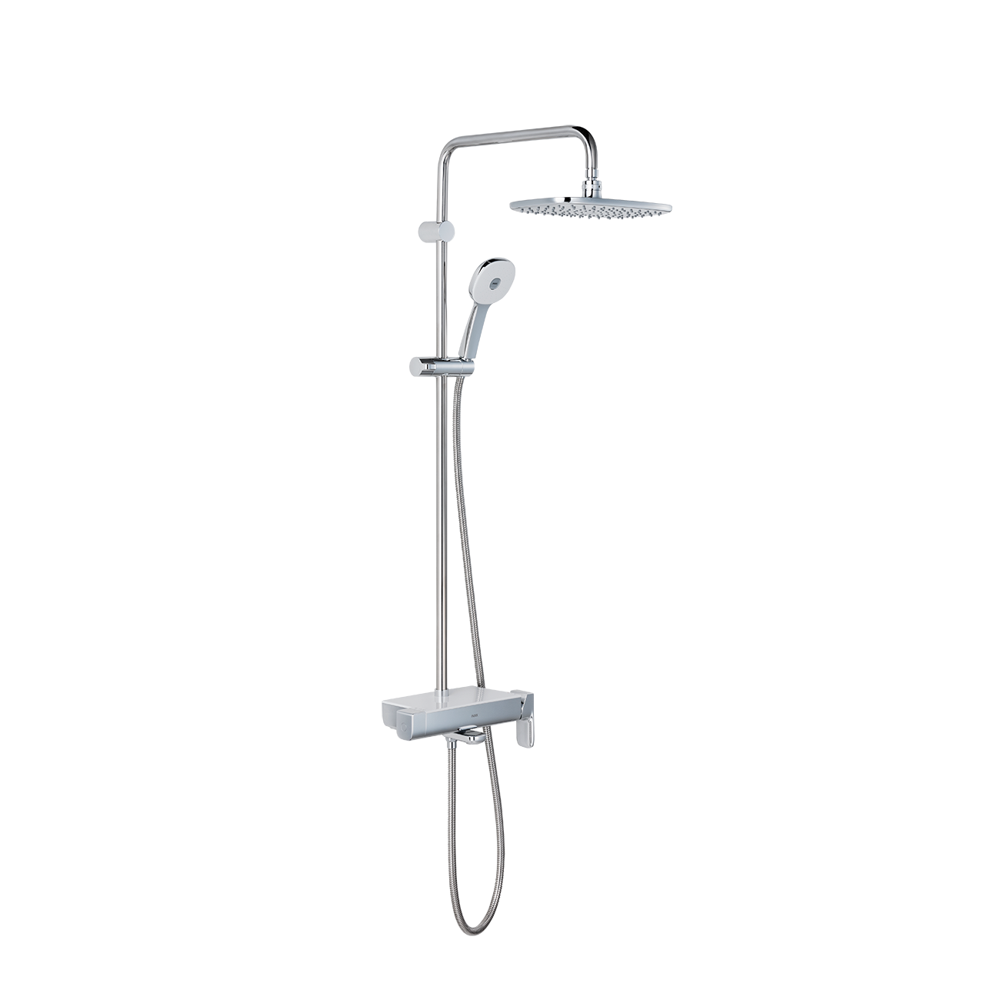
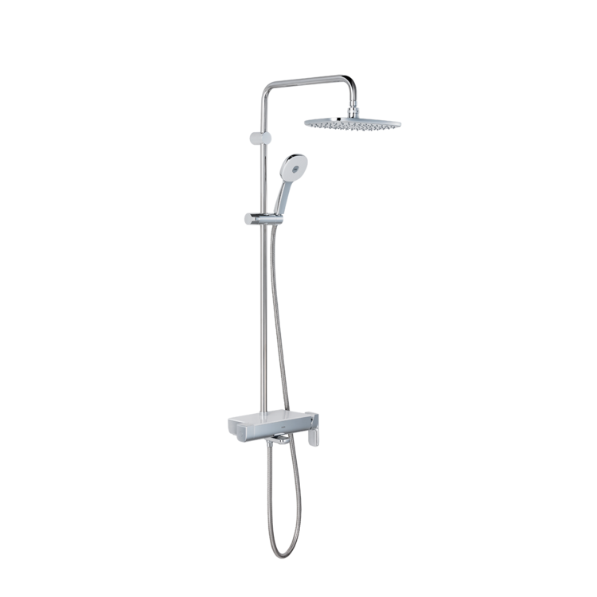
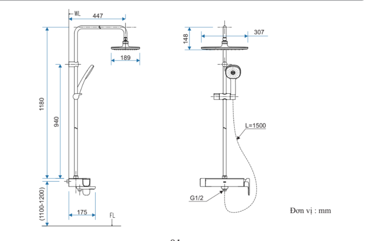

Với kiểu dáng tinh tế và nhiều tính năng tối ưu, sen tắm cây BFV-635S không chỉ nâng tầm không gian mà còn mang đến trải nghiệm thư giãn hoàn hảo cho gia đình bạn.Thiết kế tinh tế, tiện ích thông minhPhần trên của thân sen tắm cây BFV-635S được thiết kế phẳng, có thể tận dụng làm khay để đồ cá nhân, giúp tối ưu hóa không gian phòng tắm.Thiết kế BFV-635S có đầu vòi xoay đơn giản nhưng vô cùng chắc chắn, giúp người dùng dễ dàng điều chỉnh hướng dòng chảy theo nhu cầu sử dụng.Tay vặn vòi được thiết kế để mang lại cảm giác điều khiển nhẹ nhàng, giúp tiết kiệm nước và năng lượng hiệu quả.Sen tắm cây BFV-635S sử dụng ống mềm cao cấp tạo dòng chảy tốt và bề mặt dễ dàng lau chùi, vệ sinh trong quá trình sử dụng.Trải nghiệm tắm thư giãn hơnBát sen tắm lớn được lắp đặt trên đầu giúp làn nước ấm áp bao phủ đều lên làn da, mang lại cảm giác thư giãn tuyệt đối.Sen tắm cây BFV-635S đi kèm tay sen tăng áp đặc biệt, có thể vận hành hiệu quả ngay cả trong điều kiện áp lực nước thấp.Bát sen được thiết kế kỹ thuật cao giúp các tia nước phun ra đều và ổn định.Chất liệu bền bỉ và an toàn cho sức khỏeThân sen tắm cây BFV-635S được đúc từ đồng thau nguyên khối, đảm bảo độ bền vượt trội và kết cấu vững vàng.Bề mặt sản phẩm được bảo vệ bởi lớp mạ Crom và Niken chất lượng cao, giúp chống ăn mòn, oxy hóa và giữ vẻ đẹp sáng bóng theo thời gian.BFV-635S sử dụng vòi nước ít chì, đảm bảo an toàn cho sức khỏe người dùng và thân thiện với môi trường.Thiết kế với đĩa Cartridge cao cấp giúp kiểm soát dòng chảy chính xác, chống rò rỉ và tăng tuổi thọ sản phẩm.Vận hành ổn địnhSen cây BFV-635S hoạt động hiệu quả trong dải áp lực 0.05 MPa - 0.75 MPa, đảm bảo dòng chảy luôn ổn định cho cả nguồn nước nóng và lạnh.Video giới thiệu sen tắm INAXBản vẽ sen tắm cây BFV-635SChi tiết cách lắp đặt và sử dụng.Thông số kỹ thuậtChất liệuĐồng mạ Crom/NikenLoạiSen cây tắm nóng lạnhKích thước542mm x 326mm x 1245mmThiết kế-Thương hiệuINAXTính năng- Thân sen thông minh làm khay để đồ tiện lợi - Tay sen tăng áp đặc biệt dành cho khu vực nước yếu - Bát sen lớn phun đều toàn thân, tạo cảm giác sảng khoái - Đĩa Cartridge bền bỉ, van khóa nước hoàn toàn, chống rò rỉÁp lực nước0.05 MPa - 0.75 MPaKhác- Hotline tư vấn và bảo hành: 18006633
Sen tắm cây BFV-635S
Vòi chậu thương hiệu INAX.
Đã cập nhật danh sách yêu thích.
DANH MỤC: Vòi chậu
MÃ SẢN PHẨM: BFV-635S
DEPTH: 542mm
HEIGHT: 1245mm
WIDTH: 326mm
Với kiểu dáng tinh tế và nhiều tính năng tối ưu, sen tắm cây BFV-635S không chỉ nâng tầm không gian mà còn mang đến trải nghiệm thư giãn hoàn hảo cho gia đình bạn.Thiết kế tinh tế, tiện ích thông minhPhần trên của thân sen tắm cây BFV-635S được thiết kế phẳng, có thể tận dụng làm khay để đồ cá nhân, giúp tối ưu hóa không gian phòng tắm.Thiết kế BFV-635S có đầu vòi xoay đơn giản nhưng vô cùng chắc chắn, giúp người dùng dễ dàng điều chỉnh hướng dòng chảy theo nhu cầu sử dụng.Tay vặn vòi được thiết kế để mang lại cảm giác điều khiển nhẹ nhàng, giúp tiết kiệm nước và năng lượng hiệu quả.Sen tắm cây BFV-635S sử dụng ống mềm cao cấp tạo dòng chảy tốt và bề mặt dễ dàng lau chùi, vệ sinh trong quá trình sử dụng.Trải nghiệm tắm thư giãn hơnBát sen tắm lớn được lắp đặt trên đầu giúp làn nước ấm áp bao phủ đều lên làn da, mang lại cảm giác thư giãn tuyệt đối.Sen tắm cây BFV-635S đi kèm tay sen tăng áp đặc biệt, có thể vận hành hiệu quả ngay cả trong điều kiện áp lực nước thấp.Bát sen được thiết kế kỹ thuật cao giúp các tia nước phun ra đều và ổn định.Chất liệu bền bỉ và an toàn cho sức khỏeThân sen tắm cây BFV-635S được đúc từ đồng thau nguyên khối, đảm bảo độ bền vượt trội và kết cấu vững vàng.Bề mặt sản phẩm được bảo vệ bởi lớp mạ Crom và Niken chất lượng cao, giúp chống ăn mòn, oxy hóa và giữ vẻ đẹp sáng bóng theo thời gian.BFV-635S sử dụng vòi nước ít chì, đảm bảo an toàn cho sức khỏe người dùng và thân thiện với môi trường.Thiết kế với đĩa Cartridge cao cấp giúp kiểm soát dòng chảy chính xác, chống rò rỉ và tăng tuổi thọ sản phẩm.Vận hành ổn địnhSen cây BFV-635S hoạt động hiệu quả trong dải áp lực 0.05 MPa - 0.75 MPa, đảm bảo dòng chảy luôn ổn định cho cả nguồn nước nóng và lạnh.Video giới thiệu sen tắm INAXBản vẽ sen tắm cây BFV-635SChi tiết cách lắp đặt và sử dụng.Thông số kỹ thuậtChất liệuĐồng mạ Crom/NikenLoạiSen cây tắm nóng lạnhKích thước542mm x 326mm x 1245mmThiết kế-Thương hiệuINAXTính năng- Thân sen thông minh làm khay để đồ tiện lợi - Tay sen tăng áp đặc biệt dành cho khu vực nước yếu - Bát sen lớn phun đều toàn thân, tạo cảm giác sảng khoái - Đĩa Cartridge bền bỉ, van khóa nước hoàn toàn, chống rò rỉÁp lực nước0.05 MPa - 0.75 MPaKhác- Hotline tư vấn và bảo hành: 18006633
DANH MỤC: Vòi chậu
MÃ SẢN PHẨM: BFV-635S
DEPTH: 542mm
HEIGHT: 1245mm
WIDTH: 326mm